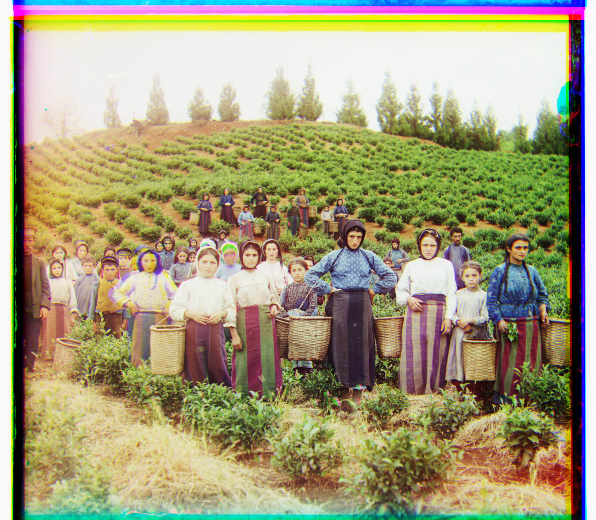
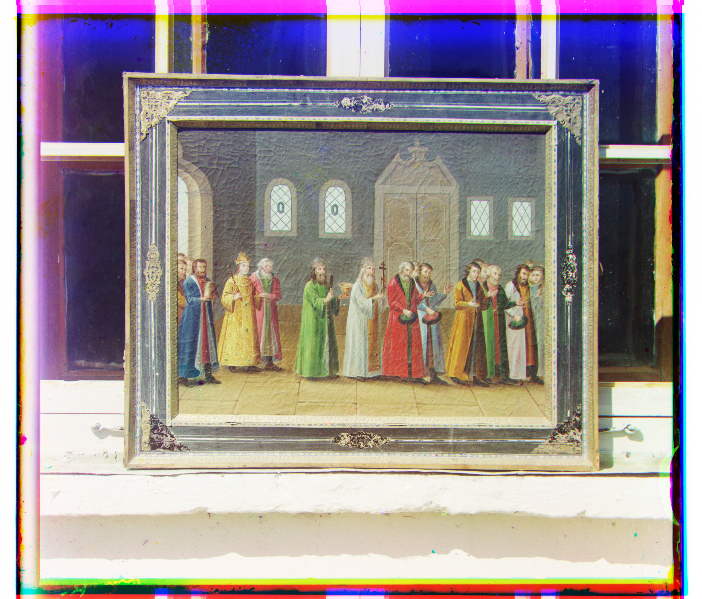
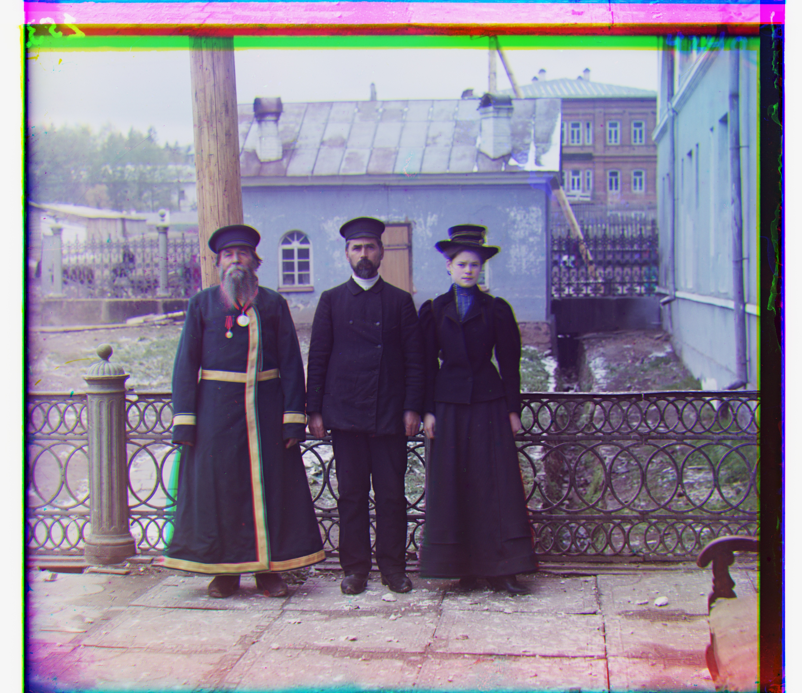
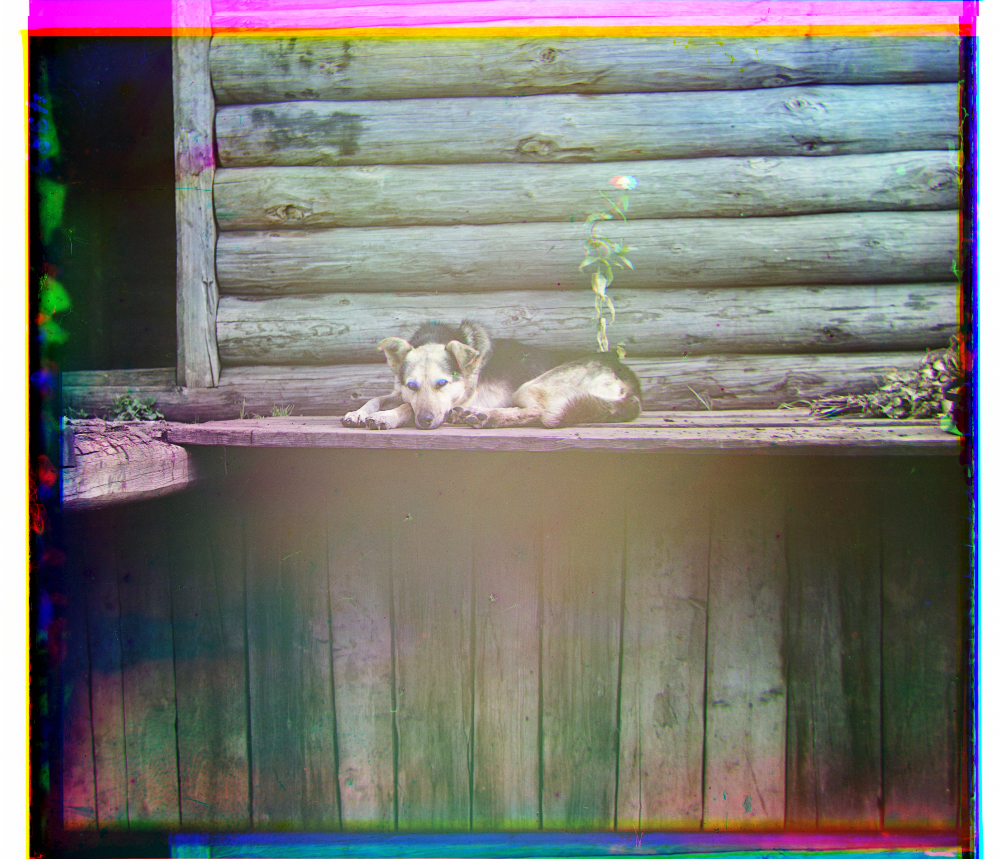

Project 1: Images of the Russian Empire
Colorizing the Prokudin-Gorskii Photo Collection
Part 1: Low-Resolution Images (Single-Scale Search)
Single-Scale Alignment: For smaller, low-resolution images, I implemented an exhaustive search over a [-15, 15] pixel window.
To score the alignment, I used the Normalized Cross-Correlation (NCC) metric. By cropping the borders by 10% before computing the NCC score, the algorithm avoids matching the white/black borders and focuses on the structural interior of the image.
Below are the alignments for the 3 smaller .jpg files using the exhaustive search method.

Cathedral

Monastery

Tobolsk
| Image Name | Green Shift (dy, dx) | Red Shift (dy, dx) | Time Taken (seconds) |
|---|---|---|---|
| Cathedral | (5, 2) | (12, 3) | 0.63 |
| Monastery | (-3, 2) | (3, 2) | 0.34 |
| Tobolsk | (3, 3) | (6, 3) | 0.37 |
Part 2: High-Resolution Images (Image Pyramid)
Multi-Scale Pyramid Alignment: Exhaustive search becomes too slow for high-resolution .tif files. To handle this, I built a coarse-to-fine image pyramid. The algorithm recursively scales the image down by a factor of 2 until the width/height is below 400 pixels. It calculates a coarse alignment shift, scales that shift by 2 as it travels back up the pyramid, and performs a small localized search (window of [-2, 2]) at each level to refine the alignment.
Below are the alignments for the 11 large .tif files using the multi-scale pyramid algorithm.

Church

Emir (Misaligned)

Harvesters
Icon

Ilemselga

Melons

Religous Painting

Self Portrait

Siren

Three Generations

Wharf
| Image Name | Green Shift (dy, dx) | Red Shift (dy, dx) | Time Taken (seconds) |
|---|---|---|---|
| Church | (25, 4) | (58, -4) | 4.71 |
| Emir (Misaligned) | (49, 24) | (141, -205) | 4.74 |
| Harvesters | (60, 17) | (124, 13) | 4.70 |
| Icon | (41, 17) | (89, 23) | 4.81 |
| Ilemselga | (40, 7) | (130, 11) | 4.89 |
| Melons | (82, 11) | (178, 13) | 4.92 |
| Religous Painting | (28, 3) | (68, 7) | 5.14 |
| Self Portrait | (79, 29) | (176, 37) | 4.90 |
| Siren | (49, -6) | (96, -25) | 4.84 |
| Three Generations | (53, 14) | (112, 11) | 4.80 |
| Wharf | (15, -7) | (83, -16) | 4.84 |
Part 3: Additional Images from the Collection
I selected 3 additional images from the Library of Congress Prokudin-Gorskii collection to test my algorithm on.

Bashkir Dog

Belaia River

On the Island of Capri
| Image Name | Green Shift (dy, dx) | Red Shift (dy, dx) | Time Taken (seconds) |
|---|---|---|---|
| Bashkir Dog | (61, 8) | (138, 8) | 4.80 |
| Belaia River | (53, -17) | (120, -35) | 4.88 |
| On the Island of Capri | (45, -13) | (103, -11) | 4.91 |
Part 4: Bells & Whistles - Fixing Emir.tif
Standard alignment using pixel intensities fails on emir.tif because the brightness values of the Emir's clothing are vastly different across the Blue, Green, and Red channels. The standard algorithm tries to align dark patches with light patches, resulting in a blurry, misaligned image.
To solve this, I implemented Edge-Based Alignment using a Sobel filter. Instead of comparing raw color values, the algorithm extracts the structural edges (gradients) of the images using cv.Sobel to compute the gradient magnitude. Because the physical boundaries of the shapes remain consistent regardless of their channel brightness, calculating the Normalized Cross-Correlation on the edges perfectly aligns the image.
A Sobel filter convolves the image with two 3×3 kernels to estimate the horizontal and vertical intensity gradients:
Before: Emir (Misaligned)

After: Emir (Fixed)
| Image Name | Green Shift (dy, dx) | Red Shift (dy, dx) | Time Taken (seconds) |
|---|---|---|---|
| Emir (Misaligned) | (49, 24) | (141, -205) | 4.74 |
| Emir (Fixed) | (49, 24) | (107, 40) | 7.53 |